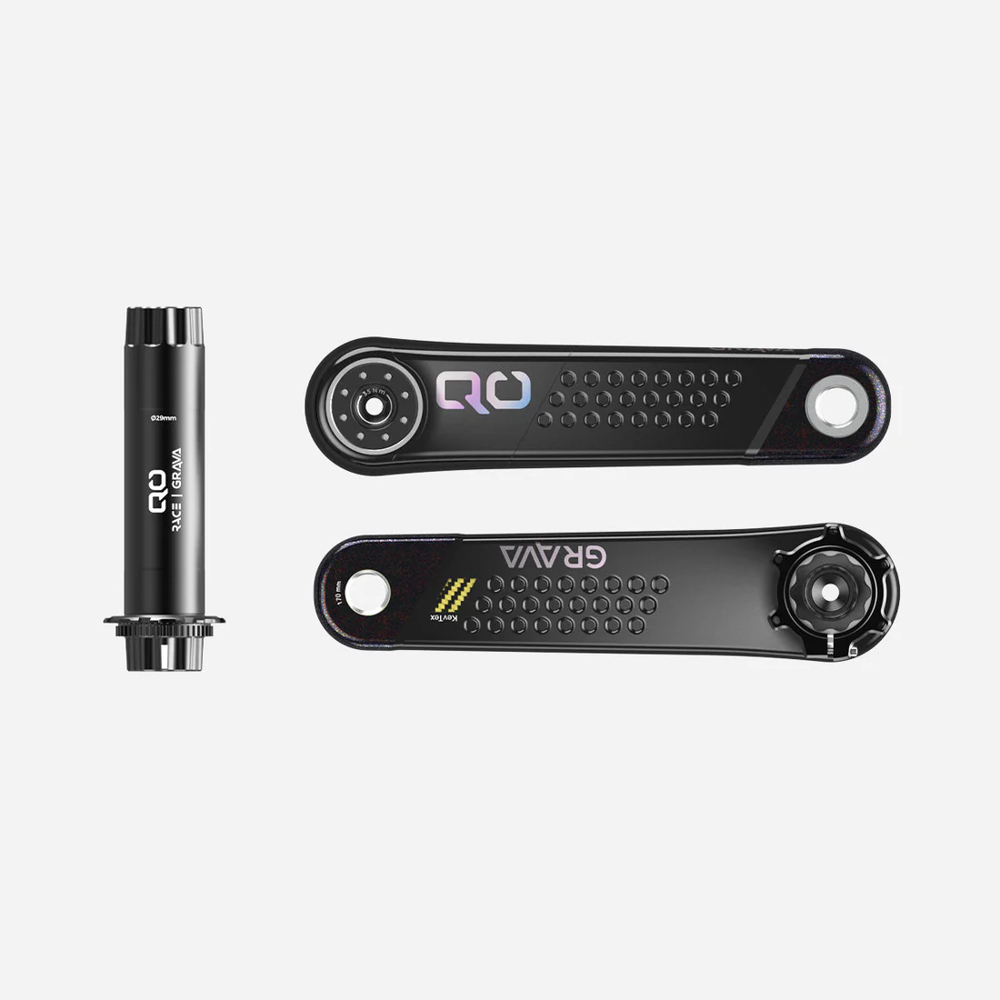

Gravel-optimised carbon cranks and spindle. Pair with QO GRAVA chainrings for a full custom build.
The QO GRAVA is built around the reality of gravel racing — variable terrain, long distances, and the need for a drivetrain that just works.
| Type | Gravel Carbon Cranks & Spindle |
| Material | Carbon |
| Compatibility | QO GRAVA chainrings |
| CNC Machined | Madrid, Spain |
| Price | R8,000 |
| Distributor | Plus Aero — Exclusive SA Distributor |
| Origin | QO Bike Components, Spain |